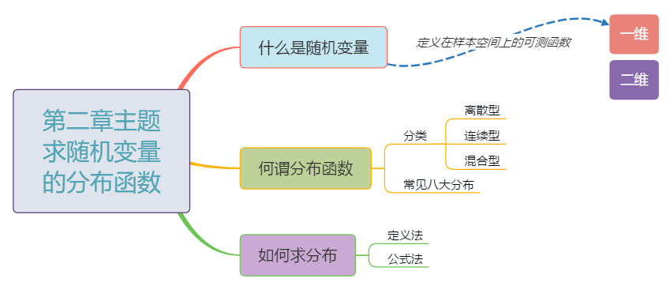
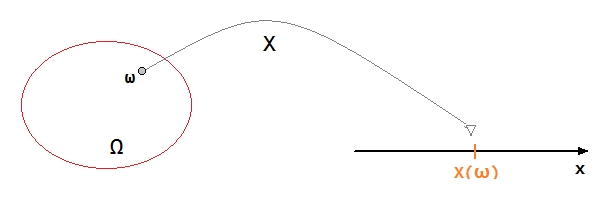

随机变量是概率论与数理统计研究的基本对象，它是定义在样本空间上的实函数.我们关心的是它取哪些值以及以怎样的概率取这些值，而分布函数完整地描述了随机变量取值的统计规律，且具有良好的分析性质，因此第二章 随机变量及其分布的主题是: 求随机变量的分布函数.
下面我们围绕如下三个问题讨论:
- 什么是随机变量?
- 何谓分布函数?
- 如何求分布?

一、什么是随机变量？
将随机试验的样本空间$\small\mathbf{\Omega}$中的每个样本点$\small\mathbf{\omega}$, 按照某种对应法则$\small\mathbf{X}$, 对应数轴上唯一确定的一个实数$\small\mathbf{X(\omega)}$, 则称$\small\mathbf{X = X(\omega) (\omega \in \Omega)}$为随机变量.

二、何谓分布函数？
1.分布函数的定义
设$\small\mathbf{X}$为随机变量，对任意的$\small\mathbf{x \in (-\infty,+\infty)}$, 称$\small\mathbf{F(x) = P\{X \leq x\}}$为随机变量$\small\mathbf{X}$的分布函数.
2.分布函数的性质
- $0 \leq F(x) \leq 1$;
- $F(x)$为单调不减函数;
- $F(x)$右连续;
- $F(-\infty) = 0, F(+\infty) = 1$.
3. 分布律&概率密度
| 离散型 | 连续型 | ||||
|---|---|---|---|---|---|
| 概率密度$f(x)$ | ||||
| $F(x) = \sum_{x_k \leq x}p(x_k)$ | $F(x) = \lmoustache_{-\infty}^xf(t)dt$ | ||||
| $0 \leq p_i \leq 1\\\sum_{i=1}^{+\infty}p_i = 1$ | $f(x) \geq 0\\\lmoustache_{-\infty}^{+\infty}f(x)dx = 1\\P\{a \lt X \leq b\} = \lmoustache_a^bf(x)dx\\F^{‘}(x) = f(x)$ |
4. 八大分布
离散型
| 离散型 | 分布律 | 说明 | ||||
|---|---|---|---|---|---|---|
| 0-1分布 | $P\{X = k\}=p^k(1-p)^{1-k}\\\qquad(k = 0,1)$ |
| ||||
| 二项分布 | $P\{X=k\}=C_n^kp^k(1-p)^{n-k}\\\qquad(k=0,1,…,n)$ | n重贝努利试验 $X\sim B(n,p)$ | ||||
| 泊松分布 | $P\{X=k\}=\frac{\lambda^k}{k!}e^{-\lambda}\\\quad(k=0,1,2,…)$ | 单位时间人流数 $X\sim P(\lambda)/\pi(\lambda)$ | ||||
| 几何分布 | $P\{X=k\}=p(1-p)^{k-1}\\\qquad(k=1,2,…)$ | 等待型分布 $X\sim G(p)$ | ||||
| 超几何分布 | $P\{X=k\}=C^k_MC^{n-k}_{N-M}/C_N^n\\\quad(k=0,1,2,…,min\{n,M\})$ | 从$\small{N}$件产品中任取n件 , 抽到k件次品的概率 |
连续型
(1)均匀分布：设随机变量$\small\mathbf{X}$的概率密度为
$\displaystyle \mathbf{f(x)} = \left\{\begin{array}{cc}\displaystyle\mathbf{\frac{1}{b-a},\qquad x\in (a,b)}\\\displaystyle\mathbf{
0,\qquad\qquad 其它}\end{array}\right.$
则称$\small\mathbf{X}$在$\small\mathbf{(a,b)}$内服从均匀分布，记为$\small\mathbf{X\sim U(a,b)}$,其分布函数为
$\displaystyle\mathbf{F(x)=\left\{\begin{array}{cc}\mathbf{0,\qquad x \lt a}\\
\mathbf{\frac{x-a}{b-a},\quad a\leq x\lt b}\\
\mathbf{1,\qquad x\geq b}\end{array}\right.}$
(2)指数分布: 设随机变量$\small\mathbf{X}$的概率密度为
$\displaystyle\mathbf{f(x)=\left\{\begin{array}{cc}
\mathbf{\lambda e^{-\lambda x},\qquad x \gt 0}\\
\mathbf{0,\qquad\qquad 其它}\end{array}\right.}\quad\mathbf{(\lambda \gt 0)}$
则称$\small\mathbf{X}$服从参数为$\small\mathbf{\lambda}$的指数分布，记为$\small\mathbf{X\sim E(\lambda)}$, 其分布函数为
$\displaystyle\mathbf{F(x)}=\left\{\begin{array}{cc}
\mathbf{1-e^{-\lambda x},\qquad x \geq 0}\\
\mathbf{0,\qquad\qquad\quad 其它}\end{array}\right.$
[注]:指数分布具有无记忆性，即
$\qquad P\{X\gt a+b|x\gt a\} = P\{X\gt b\}$
(3)正态分布: 设随机变量$\small\mathbf{X}$的概率密度为
$\large\mathbf{\quad f(x)=\frac{1}{\sqrt{2\pi \sigma}}e^{\frac{(x-\mu)^2}{2\sigma^2}}\quad(\sigma\gt 0,x\in (-\infty,+\infty)}$
则称$\small\mathbf{X}$服从正态分布，记为$\small\mathbf{X\sim N(\mu,\sigma^2)}$.
特别地，当$\small\mathbf{\mu=0,\sigma=1}$时，称$\small\mathbf{X}$服从标准正太分布，其概率密度为
$\displaystyle\mathbf{\quad\varphi(x)=\frac{1}{\sqrt{2\pi}}e^{-\frac{x^2}{2}}\qquad x\in(-\infty,+\infty)}$
[注记]：
- $\mathbf{\Phi(0)=1/2}$;
- $\mathbf{\Phi(-a)=1-\Phi(a)}$;
- $\mathbf{P\{X\leq \mu\}=P\{X\gt \mu\}=1/2}$;
- 若$\mathbf{X\sim N(\mu,\sigma^2)}$,则$\displaystyle\mathbf{F(x)=\Phi\lgroup\frac{x-\mu}{\sigma}\rgroup},$
$\displaystyle\mathbf{P\{a\lt X\leq b\}=F(b)-F(a)\\\qquad\qquad\qquad=\Phi\lgroup\frac{b-\mu}{\sigma}\rgroup}-\Phi\lgroup\frac{a-\mu}{\sigma}\rgroup$ - 若$\mathbf{X\sim N(\mu,\sigma^2)}$, 则$\displaystyle\mathbf{\frac{x-\mu}{\sigma}\sim N(0,1)}.$